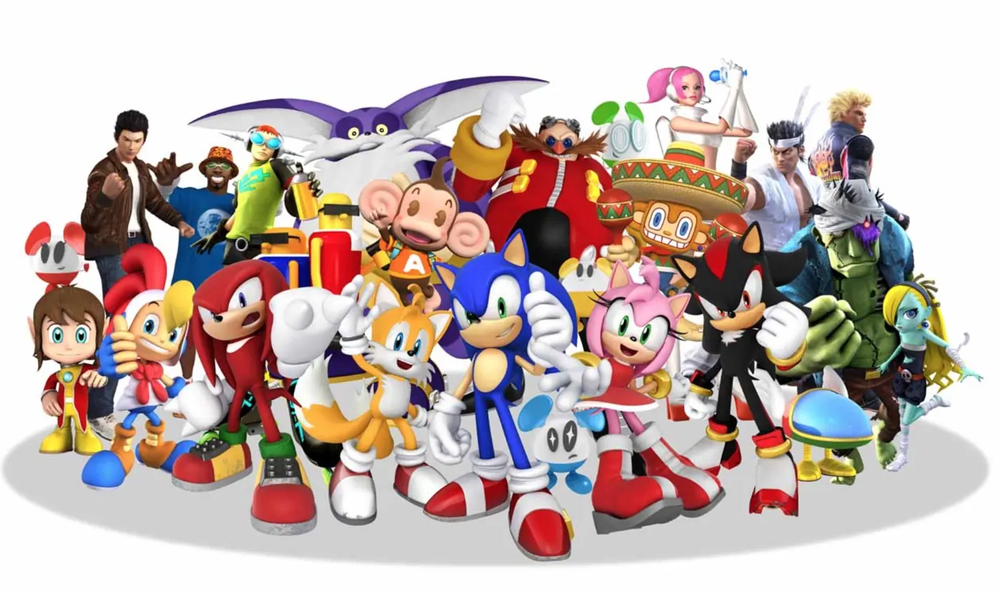

SEGA: a creator campaign to get Sonic running again
For the launch of “Sonic Generations Recharged”, a remastered version of the classic Sonic games, we built a creator campaign: ten profiles in three tiers, an outreach and value-exchange plan for each one, the brief they receive, the content guidelines, the timeline, the metrics and a reading of trends, hashtags and competitors.

The proposal on one page
SEGA is launching “Sonic Generations Recharged”. The campaign has to light up the nostalgia of those who grew up with Sonic and, at the same time, capture those discovering him for the first time: a global audience aged 15 to 35 that lives between YouTube, Twitch, Instagram and TikTok and mixes video games with pop culture, anime and memes. The idea: Sonic is timeless. Whether it is your first run or a throwback, the game is about speed, fun and reconnecting with what made gaming magical. It is not a reboot: it is a celebration of Sonic’s impact across generations, told by creators who share that energy. Everything comes together under one hashtag, #RechargedWithSonic, with Sonic’s official account as the “conductor” of the conversation.
- 1 · Awareness
Mega creators generate the initial buzz with trailers and announcements.
- 2 · Engagement
Mid-tier creators provide in-depth content and gameplay.
- 3 · Community
Micro creators build authentic connections with the most dedicated fans.
- 4 · Conversion
All tiers drive traffic to the purchase of “Sonic Generations Recharged”.
Each creator tier owns a stage of the funnel; conversion is pushed by all three together.
| What is delivered | What it consists of |
|---|---|
| Ten creators in three tiers | Mega, mid and micro; each tier with a funnel stage of its own |
| A plan per creator | How they are approached, what they get in return, what long-term relationship is sought |
| The brief | Objective, audience, key message, content guidelines, do’s and don’ts |
| Timeline and pay | Five stops from the brief to the coordinated launch; rate by tier plus extras |
| Metrics | Engagement rate, hashtag usage and relative reach; internal metrics |
| Social listening | Trends, hashtags, competitors and the mood of the conversation |
Ten creators in three tiers
The selection mixes sizes on purpose: mega creators (over a million followers) for reach and launch buzz, mid-tier (between a hundred thousand and a million) for niche credibility and in-depth content, and micro (under a hundred thousand) for authenticity and community. The categories cover gaming, retro, animation, cosplay and general entertainment. They were chosen for their alignment with SEGA’s fan base, for high engagement rates and communities that trust their recommendations, for covering Twitch, YouTube, TikTok and Instagram between them, and because each produces a different kind of content that fits its platform.
| Creator | Tier | Platform | Category | What they bring |
|---|---|---|---|---|
| Jacksepticeye | Mega | YouTube | Gaming and comedy | Energy and high-visibility Let’s Plays |
| Pokimane | Mega | Twitch | Gaming and lifestyle | A live “nostalgia night” for a young audience |
| Valkyrae | Mega | YouTube and Twitch | Variety | A “first time playing Sonic” for Gen Z |
| Miniminter | Mega | YouTube | Gaming and entertainment | Challenges with friends, viral formats |
| Sonic the Hedgehog (official) | Mega, brand-led | X and TikTok | Character | The fans’ “conductor”: humor, fan art, takeovers |
| The Completionist | Mid | YouTube | Retro | A 100% review for the longtime fans |
| Girlfriend Reviews | Mid | YouTube | Review with humor | A “casual observer” lens that reaches non-gamers |
| Arekkz Gaming | Mid | YouTube | Guides | Guides and gameplay breakdowns to drive the purchase decision |
| Domics | Mid | YouTube | Animation | Nostalgic animated shorts, easy to share |
| ItsSunpi | Micro | Instagram and Twitch | Cosplay | Retro and modern Sonic transformations in reels |
A plan per creator
Each creator has three lines: how they are approached, what they get in return and what long-term relationship is sought.
| Creator | Approach | Exchange | Long term |
|---|---|---|---|
| Jacksepticeye | Through his agency and SEGA’s press team; early access and a paid stream | Exclusive content, merchandise and affiliate-link commission | Regular collaborator; co-create content or appear in a game’s credits |
| Pokimane | Message via Twitch or her management; a live “Nostalgia Night” with interactive features | Paid streaming campaign, exclusive skins to give away, a Sonic avatar for her overlay | A “Play With Poki” series with SEGA launches, focused on women gamers |
| Valkyrae | Through her YouTube agency; a “first time playing Sonic” segment for Gen Z | Paid campaign, exclusive cosmetics matching her channel, behind-the-scenes content | SEGA ambassador with quarterly campaigns; voicing a character in a spin-off |
| Miniminter | Through his management team; a “Sonic Challenge” series with friends | Sponsored content, in-game leaderboard, invitation to SEGA esports | Sonic at the big streamer events and in esports promotions |
| Sonic the Hedgehog (official) | Internal coordination with the social team; character humor on X and TikTok | Amplify the creators’ content, the #RechargedWithSonic hashtag and fan art | The witty voice leading the conversation; Q&A takeovers with creators |
| The Completionist | Email to his channel contacts; early access and development notes | Sponsored long-form review, exclusive insights from the developers, collector’s edition | A retro SEGA review series; a SEGA history documentary |
| Girlfriend Reviews | Email or social media; a humorous co-op segment with split screen | Paid partnership, fan contests, access to limited merchandise | A “then and now” series comparing the original Sonic games with the new ones |
| Arekkz Gaming | Contact form on his channel; early access and questions to the developers | Sponsored guides, affiliate links, branded overlays | SEGA as a trusted source of technical and lore content; access to early builds |
| Domics | Direct contact or agency; animated shorts about Sonic nostalgia | Sponsorship, exclusive character art, promotion on SEGA’s channels | An animated mini-series of fan stories; fan art weeks |
| ItsSunpi | Direct message on Instagram or Twitch; retro and modern Sonic cosplay | Paid visual campaign, exclusive cosplay kit, a spot on SEGA’s global Instagram | The brand’s cosplay ambassador; tutorials and digital challenges for fans |
The brief the creators receive
Objective. Light up the nostalgia of longtime fans, capture the Gen Z discovering Sonic, spark social buzz with short, entertaining creator-made content, and drive traffic to the game’s store page. Tone. Playful, bold, energetic, authentic and “a little nerdy”: the content has to feel like one of the creator’s regular posts, with Sonic speeding through. No need for a perfect commercial; the more it looks like the creator, the better. Deliverables. A reel or TikTok of 30 to 60 seconds; for long-form creators, a YouTube or Twitch segment; optional: up to three stories and an extra mention. What matters is showing the game in action: gameplay, reactions, cosplay, skits, animation or fan art.
| Do | Don’t |
|---|---|
| Name the full title, “Sonic Generations Recharged” | Mention competitor games or brands |
| Tag Sonic’s account and use #RechargedWithSonic | Alter Sonic’s logo, colors or visuals |
| Speak in the creator’s own voice | Fake testimonials or forced, salesy language |
| Bright, colorful lighting, in tune with Sonic’s energy | Over-editing until it feels sterile: personality beats perfection |
| Cosplay, nostalgia and classic memes, with nods for fans | Posting outside the coordinated launch-day wave |
Timeline and what each creator receives
- Day 0 · The starting line
The brief, the brand assets and all the Sonic energy arrive.
- Days 3 to 5 · The idea
The creator pitches the concept; it is reviewed, fine-tuned and approved.
- 7 to 10 days later · Production
About a week to film, edit and bring it to life.
- 2 to 3 days before · Final check
Last quality review and alignment with the brand.
- Publication day · The launch
All the creators post together, in a single wave.
Coordinated publication is the key: each creator’s fans see the others and the buzz multiplies.
It is a paid partnership with rates by tier (mega, mid, micro) and by reach, rewarding creativity and not just followers. Extras: exclusive merchandise (collector’s editions and limited drops), affiliate links with commission per sale, early access to the game, performance bonuses for the best-performing content and long-term opportunities as ambassadors. Plus: the chance to be featured on Sonic’s official channels, invitations to events and conventions, cross-collaborations between creators, a pack of brand-approved assets and a direct line to the campaign team.
How success is measured
| Metric | What is looked at | Why |
|---|---|---|
| 1 · Engagement rate | Likes, shares, saves and comments that show excitement, nostalgia or curiosity | The most important one: it says whether the content moved anything |
| 2 · Tag and hashtag | Sonic’s account tagged and #RechargedWithSonic on every piece | Lets the buzz be tracked across platforms and reposted from the official channels |
| 3 · Reach and visibility | Views and impressions relative to each creator’s usual performance | Key for the mega and mid-tier creators who push awareness |
Internally, story interactions (replies, taps, completion), social actions (duets and stitches, shares), traffic to SEGA pages through unique links or affiliate codes, comment tone and reach beyond each creator’s own audience are also tracked.
Trends, hashtags, competitors and mood
Four trends in the niche: nostalgia marketing (reissues and remasters), short video as the dominant format, creator-led launches that outperform traditional ads, and cosplay and fan art as drivers of organic buzz. Hashtags: the campaign one, #RechargedWithSonic; the Sonic and retro ones, like #SonicTheHedgehog, #RetroGaming and #GamingThrowback; and the organic fan ones, like #GottaGoFast, #SonicFanArt and #SonicCosplay.
| Competitor | What it does on social |
|---|---|
| Nintendo (Mario, Zelda) | Creator collaborations (the Mario Day challenges), fan polls, meme-friendly trailers; strong on YouTube Shorts and X |
| Capcom (Mega Man, Street Fighter) | Anniversaries and crossover events; YouTube and event streaming on Twitch |
| PlayStation (Crash Bandicoot, Ratchet & Clank) | Cinematic storytelling and high-quality creator partnerships on YouTube |
Nintendo dominates the global conversation, so SEGA has to win with niche energy: Sonic’s meme value and TikTok appeal are its advantage. The mood is positive (“this brings back my childhood”, “Sonic has never looked better”), with a minor but real risk: the fear of bugs or underwhelming gameplay, as in previous remasters, and the comparison with fan-made games.
Four strategic implications
- Nostalgia with creativity: memes, cosplay and retro edits on TikTok and Instagram.
- Consistent hashtags: fan content through challenges, duets and stitches.
- Sonic as the fans’ “conductor”: its channels curate the best content, humor and reactions.
- Stories with emotion: the audience responds to authenticity, humor and legacy.
What I took away
That a creator campaign is not built with a list of names but with three tiers that do different things, and that the brief is the product: if it does not speak the creator’s language, there is no content that feels real.